Part 1: Fun with Filters
Part 1.1: Convolutions from Scratch!
In this section, 2D convolution was implemented from scratch using zero padding. First using a 4-loop method, then optimized into a vectorized 2-loop method, and finally compared against SciPy's built-in scipy.signal.convolve2d function.
1. Four-Loop Implementation
def convolve2d(im1, im2, padding=0):
im2_height, im2_width = im2.shape
im1_height, im1_width = im1.shape
# pad
padded_im1 = np.pad(im1, padding, mode='constant', constant_values=0)
# get output dimensions based on padding type
if isinstance(padding, tuple):
pad_y = padding[0][0] + padding[0][1]
pad_x = padding[1][0] + padding[1][1]
else:
pad_y = 2 * padding
pad_x = 2 * padding
# out_array
output_height = im1_height - im2_height + 1 + pad_y
output_width = im1_width - im2_width + 1 + pad_x
# 0 fill from spec
output = np.zeros((output_height, output_width))
for i in range(output_height):
for j in range(output_width):
temp_sum = 0
for k in range(im2_height):
for l in range(im2_width):
temp_sum += padded_im1[i+k][j+l] * im2[k][l]
output[i][j] = temp_sum
return output2. Two-Loop Implementation
def convolve2d_fast(im1, im2, padding=0):
im2_height, im2_width = im2.shape
im1_height, im1_width = im1.shape
# pad
padded_im1 = np.pad(im1, padding, mode='constant', constant_values=0)
# get output dimensions based on padding type
if isinstance(padding, tuple):
pad_y = padding[0][0] + padding[0][1]
pad_x = padding[1][0] + padding[1][1]
else:
pad_y = 2 * padding
pad_x = 2 * padding
# out_array
output_height = im1_height - im2_height + 1 + pad_y
output_width = im1_width - im2_width + 1 + pad_x
# 0 fill from spec
output = np.zeros((output_height, output_width))
for i in range(output_height):
for j in range(output_width):
output[i][j] = np.sum(padded_im1[i:i+im2_height, j:j+im2_width] * im2)
return outputRuntime Analysis & Boundary Handling
- Four Loop Implementation: Has a time complexity of O(H×W×K×L) where H,W represent image dimensions and K,L represent kernel dimensions. The explicit nested loops make the algorithm clear, but execution is computationally expensive due to pure Python overhead.
- Two Loop Implementation: Achieves significant speed improvements with O(H×W) outer loop complexity. It uses
numpy.sum()for vectorized matrix element-wise multiplication on kernel patches, leveraging optimized underlying C libraries. - scipy.signal.convolve2d: A highly optimized implementation achieving a 10-100x speedup. It automatically switches to FFT-based convolution for larger filter kernels.
- Boundary Handling: Zero padding preserves output dimensions (same mode) and prevents edge artifacts. All three functions produce identical output images when given the same padding.
Original Input Images
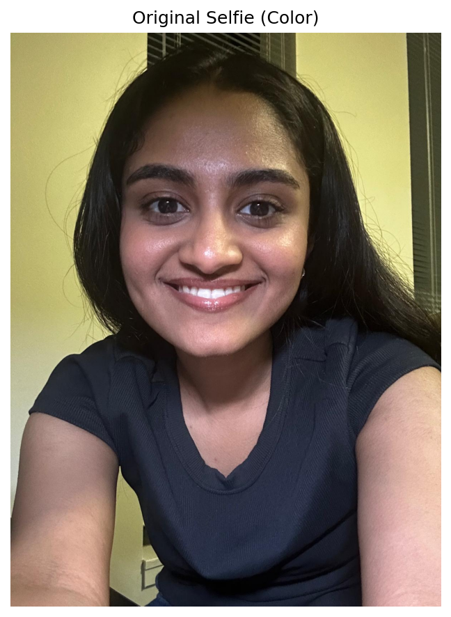
Original Selfie
Color InputSelfie Grayscale
Preprocessed Input9×9 Box Filter Results
All three implementations produce identical results, confirming correctness:
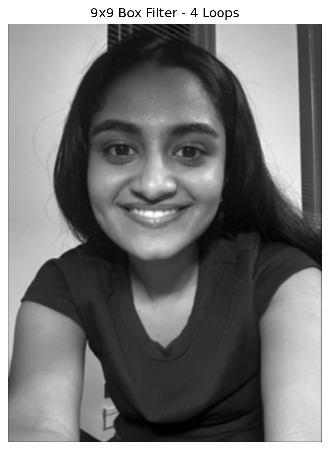
Four Loop Method
Slowest executionTwo Loop Method
Vectorized NumPyscipy.signal.convolve2d
Fastest implementationD_x Finite Difference (Vertical Edge Detection)
Detects vertical edges by calculating horizontal gradients using kernel [[1, 0, -1]]. Sharp vertical details like the background window blinds are highlighted.
Four Loop Method
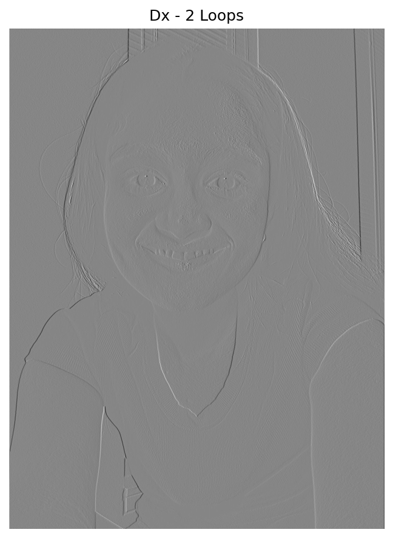
Two Loop Method
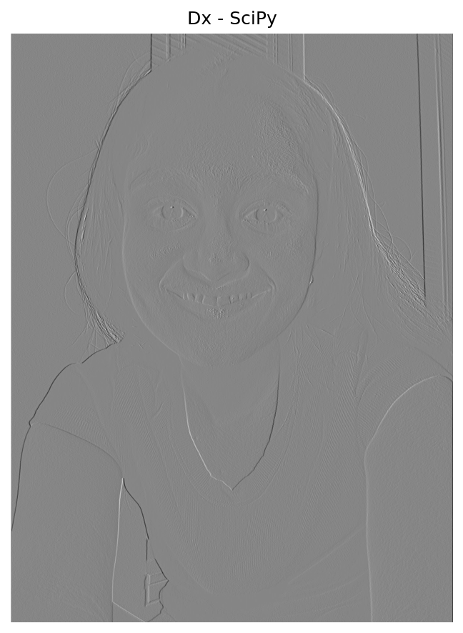
scipy.signal.convolve2d
D_y Finite Difference (Horizontal Edge Detection)
Detects horizontal edges by calculating vertical gradients using kernel [[1], [0], [-1]].
Four Loop Method
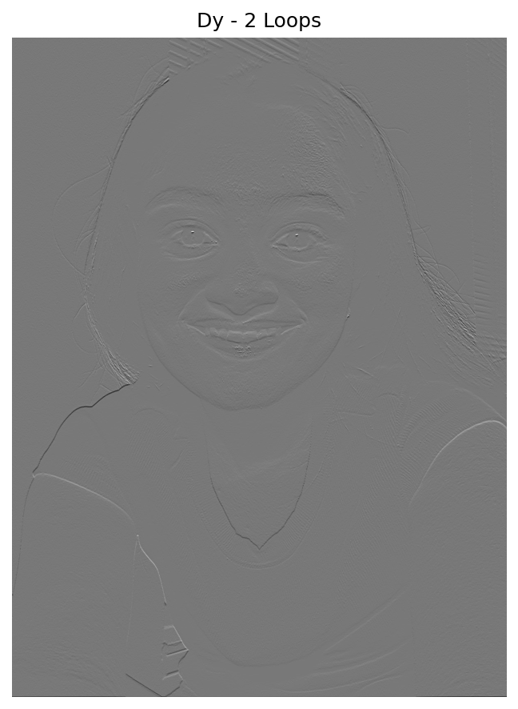
Two Loop Method
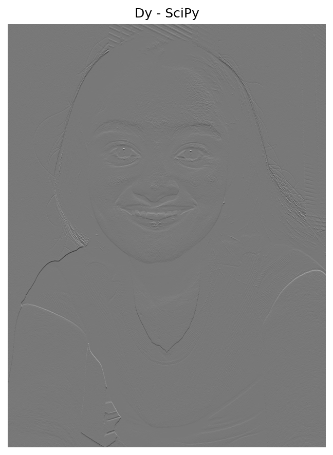
scipy.signal.convolve2d
25×25 Box Filter Results
The blur effect from the 9×9 box filter was subtle, so a larger 25×25 kernel was used to create a noticeably stronger low-pass blur effect.
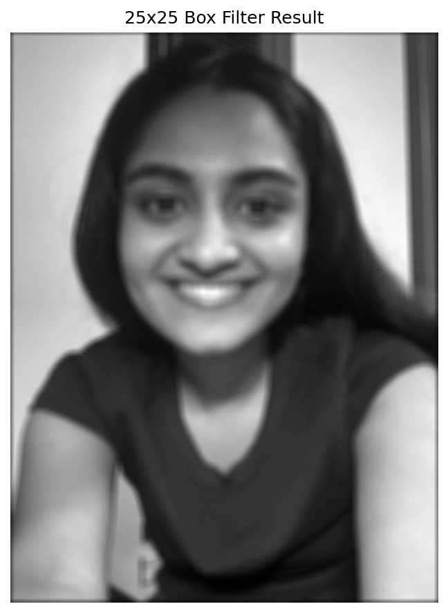
25×25 Box Filter
Enhanced blurring effectPart 1.2: Finite Difference Operator
To detect edges, we first compute the partial derivatives of the original Cameraman image in the horizontal ($x$) and vertical ($y$) directions using finite difference operators $D_x = [1, 0, -1]$ and $D_y = [1, 0, -1]^\top$. Combining these partial derivatives gives the gradient magnitude: $\text{Magnitude} = \sqrt{D_x^2 + D_y^2}$. Finally, thresholding the gradient magnitude produces a binarized edge map.
Implementation
def run_part_1_2(output_dir: str):
img_path = "cameraman.png"
cameraman_img = cv2.imread(img_path, cv2.IMREAD_GRAYSCALE)
if cameraman_img is None:
raise FileNotFoundError(f"Could not find '{img_path}'.")
cameraman = cameraman_img.astype(np.float64) / 255.0
# Define finite difference operators
Dx = np.array([[1, 0, -1]], dtype=np.float64)
Dy = np.array([[1], [0], [-1]], dtype=np.float64)
# Compute partial derivatives via 2D convolution
dx_img = scipy.signal.convolve2d(cameraman, Dx, mode='same', boundary='symm')
dy_img = scipy.signal.convolve2d(cameraman, Dy, mode='same', boundary='symm')
# Calculate gradient magnitude
grad_mag = np.sqrt(dx_img**2 + dy_img**2)
save_and_display(cameraman, os.path.join(output_dir, "13_cameraman_original.png"), "Original Cameraman")
save_and_display(dx_img, os.path.join(output_dir, "14_cameraman_dx.png"), "Dx Derivative")
save_and_display(dy_img, os.path.join(output_dir, "15_cameraman_dy.png"), "Dy Derivative")
save_and_display(grad_mag, os.path.join(output_dir, "16_cameraman_grad_mag.png"), "Gradient Magnitude")
# Evaluate multiple percentile-based thresholds
p70_val = np.percentile(grad_mag, 70)
p80_val = np.percentile(grad_mag, 80)
p85_val = np.percentile(grad_mag, 85)
p90_val = np.percentile(grad_mag, 90)
threshold_configs = [
(p70_val, "17_thresh_70th.png", f"Threshold 1: 70th Percentile ({p70_val:.4f})"),
(p80_val, "18_thresh_80th.png", f"Threshold 2: 80th Percentile ({p80_val:.4f})"),
(p85_val, "19_thresh_85th.png", f"Threshold 3: 85th Percentile ({p85_val:.4f}) - Selected"),
(p90_val, "20_thresh_90th.png", f"Threshold 4: 90th Percentile ({p90_val:.4f})")
]
for thresh_val, filename, title_text in threshold_configs:
binarized = (grad_mag > thresh_val).astype(np.float32)
save_and_display(binarized, os.path.join(output_dir, filename), title_text)Original Image, Partial Derivatives & Gradient Magnitude
The $D_x$ filter highlights vertical edges (changes across columns), while $D_y$ highlights horizontal edges (changes across rows). Combining them yields the orientation-invariant gradient magnitude map.

Original Image
Cameraman input
D_x Derivative
Horizontal gradient (vertical edges)
D_y Derivative
Vertical gradient (horizontal edges)
Gradient Magnitude
$\sqrt{D_x^2 + D_y^2}$Threshold Selection & Analysis
Finding the right threshold is a trade-off between suppressing high-frequency background noise (such as grass texture) and preserving structural edges (like the camera body, tripod legs, and skyline). Four percentile-based thresholds were tested:

70th Percentile
Too Low: Captures excessive noise in the grass
80th Percentile
Better: Retains main contours but still shows noise
85th Percentile (Selected)
Optimal: Balanced noise reduction & edge detail
90th Percentile
Too High: Loses faint structural lines & tripod legsSelected Threshold Justification: The 85th percentile threshold was chosen as the optimal choice. It successfully eliminates most high-frequency background noise in the grass field while maintaining sharp, continuous outlines for the subject, tripod, camera, and horizon. The 70th and 80th percentiles contain noticeable noise artifacts, whereas the 90th percentile is too aggressive and cuts off key structural details of the tripod and coat.
Part 1.3: Derivative of Gaussian (DoG) Filter
To eliminate high-frequency noise (such as grass texture) prior to edge detection, we apply a Gaussian filter $G$. By the associative property of convolution, $(I * G) * D = I * (G * D)$, smoothing then differentiating is mathematically identical to convolving the image with a single pre-computed Derivative of Gaussian (DoG) filter.
Implementation
def create_2d_gaussian(size: int, sigma: float) -> np.ndarray:
gaussian_1d = cv2.getGaussianKernel(size, sigma)
gaussian_2d = np.outer(gaussian_1d, gaussian_1d.T)
return gaussian_2d
def run_part_1_3(image_path: str, output_dir: str):
# Load input image
im = cv2.imread(image_path, cv2.IMREAD_GRAYSCALE).astype(np.float64) / 255.0
# 1. Create Gaussian Filter (15x15, sigma=2.0)
gaussian_filter = create_2d_gaussian(15, 2.0)
# 2. Method 1: Gaussian Smoothing then Finite Differences
im_smoothed = scipy.signal.convolve2d(im, gaussian_filter, mode='same', boundary='symm')
Dx = np.array([[1, 0, -1]], dtype=np.float64)
Dy = np.array([[1], [0], [-1]], dtype=np.float64)
dx_smoothed = scipy.signal.convolve2d(im_smoothed, Dx, mode='same', boundary='symm')
dy_smoothed = scipy.signal.convolve2d(im_smoothed, Dy, mode='same', boundary='symm')
grad_mag_smoothed = np.sqrt(dx_smoothed**2 + dy_smoothed**2)
# 3. Method 2: Derivative of Gaussian (DoG) Filters directly
dog_x_filter = scipy.signal.convolve2d(gaussian_filter, Dx, mode='full')
dog_y_filter = scipy.signal.convolve2d(gaussian_filter, Dy, mode='full')
dx_dog = scipy.signal.convolve2d(im, dog_x_filter, mode='same', boundary='symm')
dy_dog = scipy.signal.convolve2d(im, dog_y_filter, mode='same', boundary='symm')
grad_mag_dog = np.sqrt(dx_dog**2 + dy_dog**2)
# Thresholding selected at 0.07
threshold = 0.07
binarized_smoothed = (grad_mag_smoothed > threshold).astype(np.float32)
binarized_dog = (grad_mag_dog > threshold).astype(np.float32)
# Verification of numerical equality
diff_dx = np.max(np.abs(dx_smoothed - dx_dog))
diff_dy = np.max(np.abs(dy_smoothed - dy_dog))
print(f"Max difference Dx: {diff_dx:.2e}, Dy: {diff_dy:.2e}")
1. Gaussian Filter & Smoothing
A 2D Gaussian filter ($15 \times 15, \sigma = 2.0$) is created using the outer product of a 1D Gaussian kernel. Smoothing suppresses grass texture and fine noise, leaving wider and cleaner outlines.

2D Gaussian Filter
15×15 kernel, σ = 2.0
Blurred Image
Original ⊗ Gaussian filter2. Method 1: Gaussian Smoothing + Finite Differences
First, the image is blurred with the Gaussian filter, and then partial derivatives $D_x$ and $D_y$ are calculated. Applying a threshold of 0.07 keeps the key structural outlines while suppressing texture noise.
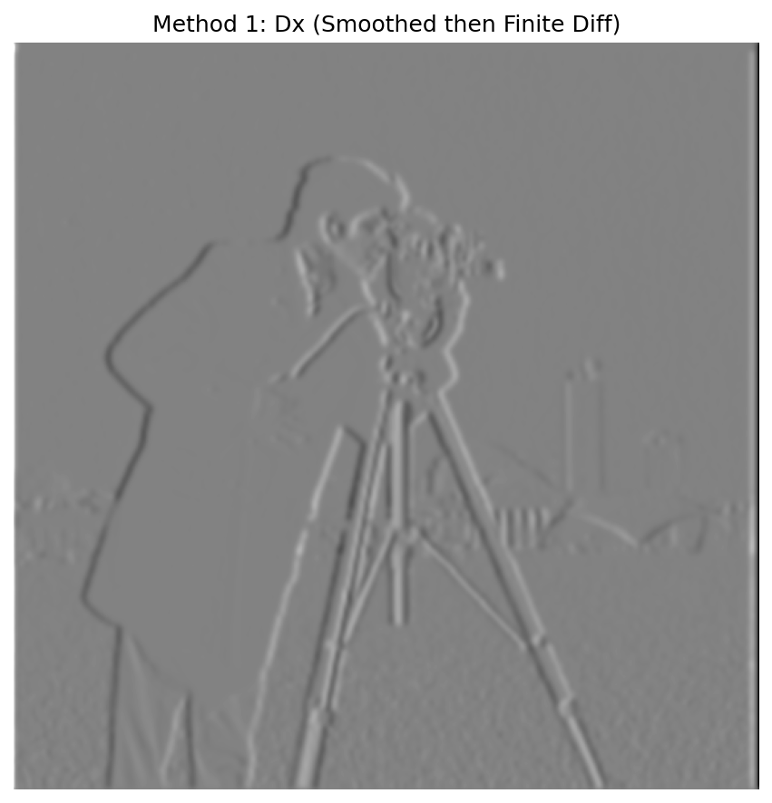
Smoothed D_x
Horizontal derivative after smoothing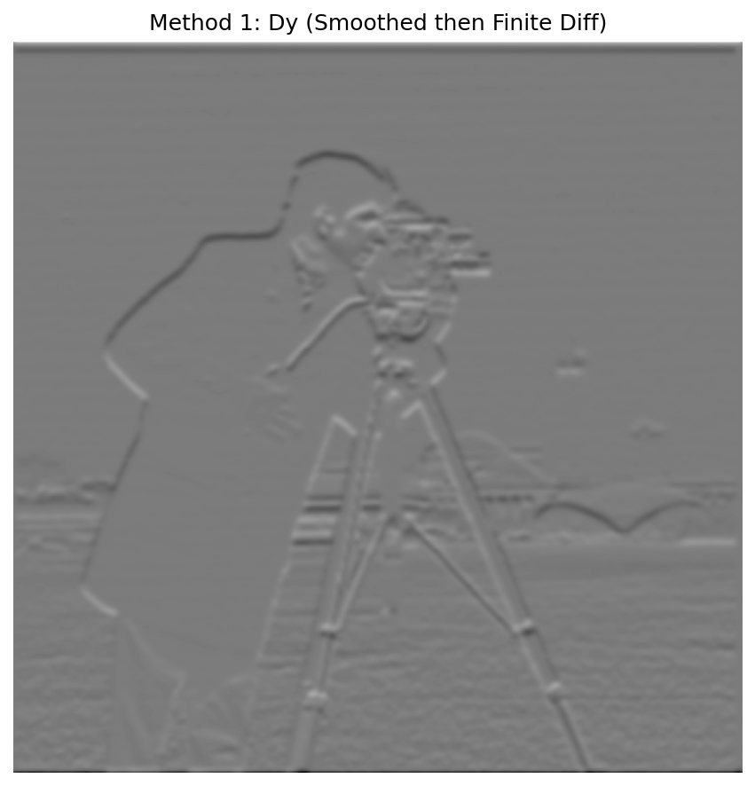
Smoothed D_y
Vertical derivative after smoothing
Smoothed Gradient Magnitude
$\sqrt{D_x^2 + D_y^2}$
Method 1 Binarized
Thresholded edges (0.07)3. Method 2: Derivative of Gaussian (DoG) Filters
We pre-compute DoG filters ($G * D_x$ and $G * D_y$) using full convolution. Convolving the image directly with these single filters accomplishes blurring and differentiation in one pass.

DoG X Filter
Gaussian ⊗ [[1, 0, -1]]
DoG Y Filter
Gaussian ⊗ [[1], [0], [-1]]
D_x Using DoG
Single-pass convolution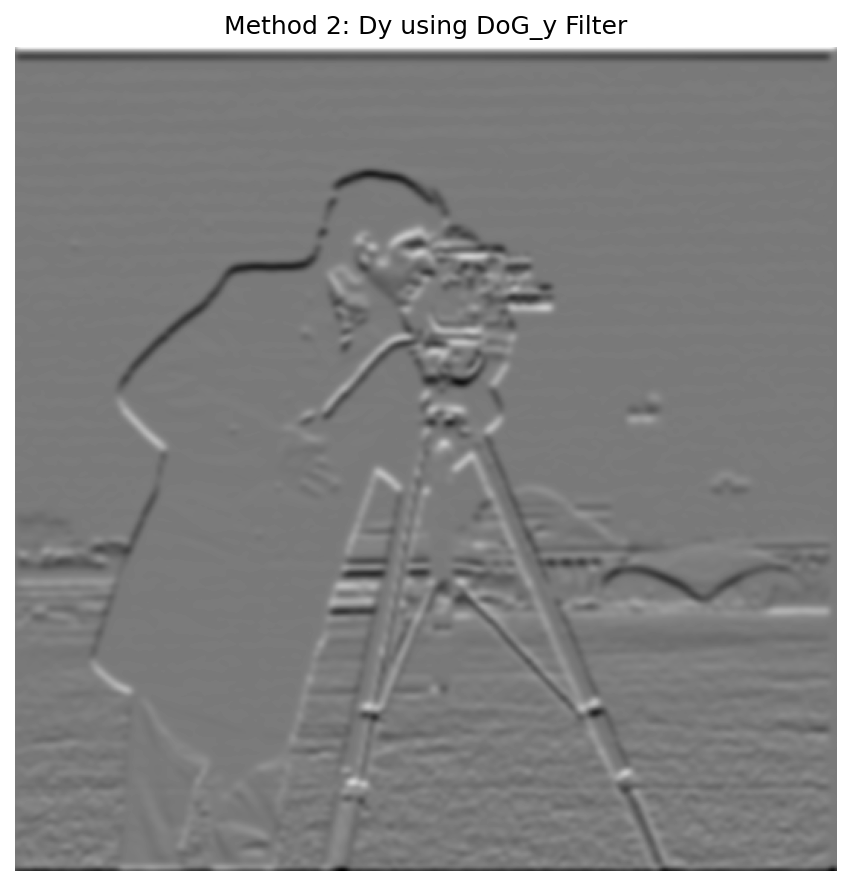
D_y Using DoG
Single-pass convolution
Method 2 Binarized
Thresholded DoG edges4. Verification & Comparison
The maximum difference between the two approaches is less than $1 \times 10^{-6}$ across the entire image. This confirms that both methods yield identical results to numerical precision, while the DoG approach offers better computational efficiency by reducing the required operations from two 2D convolutions per direction to just one.
Part 2.1: Image Sharpening ("Unsharp Masking")
An image can be sharpened by extracting its high-frequency content and adding a scaled version back to the original image. The high-frequency component is obtained by subtracting a low-pass Gaussian blurred image from the original: $$\text{High Frequencies} = I - (I * G)$$ By scaling this detail by a factor $\alpha$, the sharpened image is: $$\text{Sharpened} = I + \alpha (I - I * G) = I * ((1 + \alpha)\delta - \alpha G)$$ where $\delta$ is the unit impulse kernel and $G$ is the 2D Gaussian filter. This allows us to combine blurring and detail addition into a single unsharp mask filter operation.
Implementation
def unsharp_mask_filter(size: int, sigma: float, alpha: float) -> np.ndarray:
"""Computes single unsharp mask kernel: (1 + alpha)*delta - alpha*G"""
gaussian = create_2d_gaussian(size, sigma)
impulse = np.zeros_like(gaussian)
impulse[size // 2, size // 2] = 1.0
return (1.0 + alpha) * impulse - alpha * gaussian
def sharpen_image(im: np.ndarray, sigma: float = 1.5, alpha: float = 1.0) -> np.ndarray:
"""Sharpens an image using the single-pass unsharp mask convolution kernel."""
kernel_size = int(2 * np.ceil(3 * sigma) + 1)
kernel = unsharp_mask_filter(kernel_size, sigma, alpha)
if im.ndim == 2:
sharpened = scipy.signal.convolve2d(im, kernel, mode='same', boundary='symm')
else:
sharpened = np.zeros_like(im)
for c in range(im.shape[2]):
sharpened[:, :, c] = scipy.signal.convolve2d(im[:, :, c], kernel, mode='same', boundary='symm')
return np.clip(sharpened, 0.0, 1.0)
1. Taj Mahal Sharpening Progression
We apply unsharp masking with $\sigma = 1.5$ over varying $\alpha$ values ($0.5, 1.0, 2.0, 4.0$). As $\alpha$ increases, structural boundaries like the archways, minarets, and dome become much sharper. However, setting $\alpha = 4.0$ introduces visible haloing around edge boundaries and amplifies background noise.
Original
Input image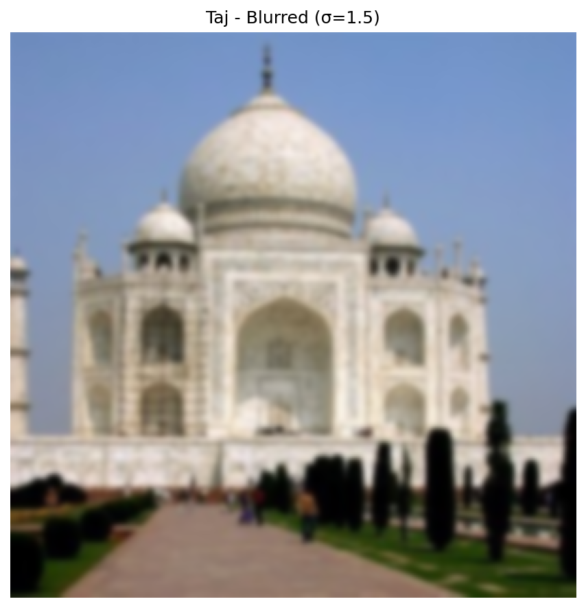
Blurred (σ = 1.5)
Low-pass Gaussian filter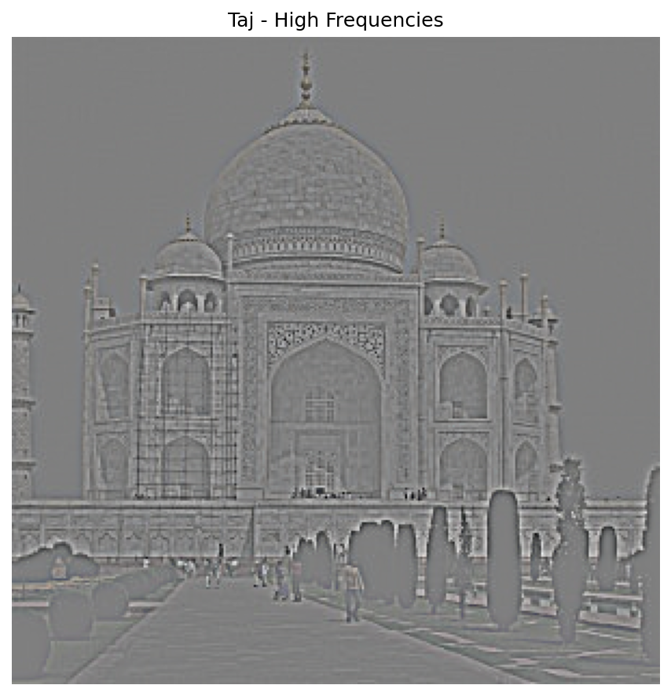
High Frequencies
Original - Blurred (zero is gray)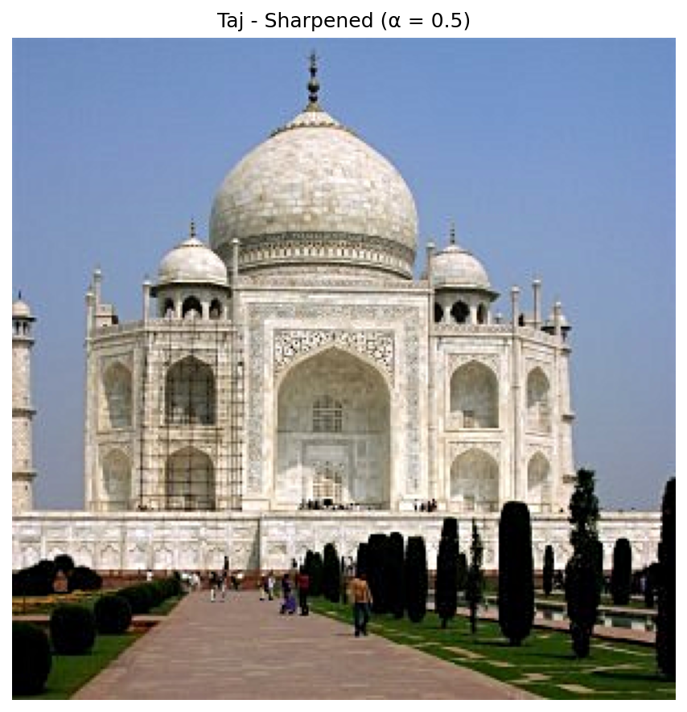
Sharpened (α = 0.5)
Subtle enhancement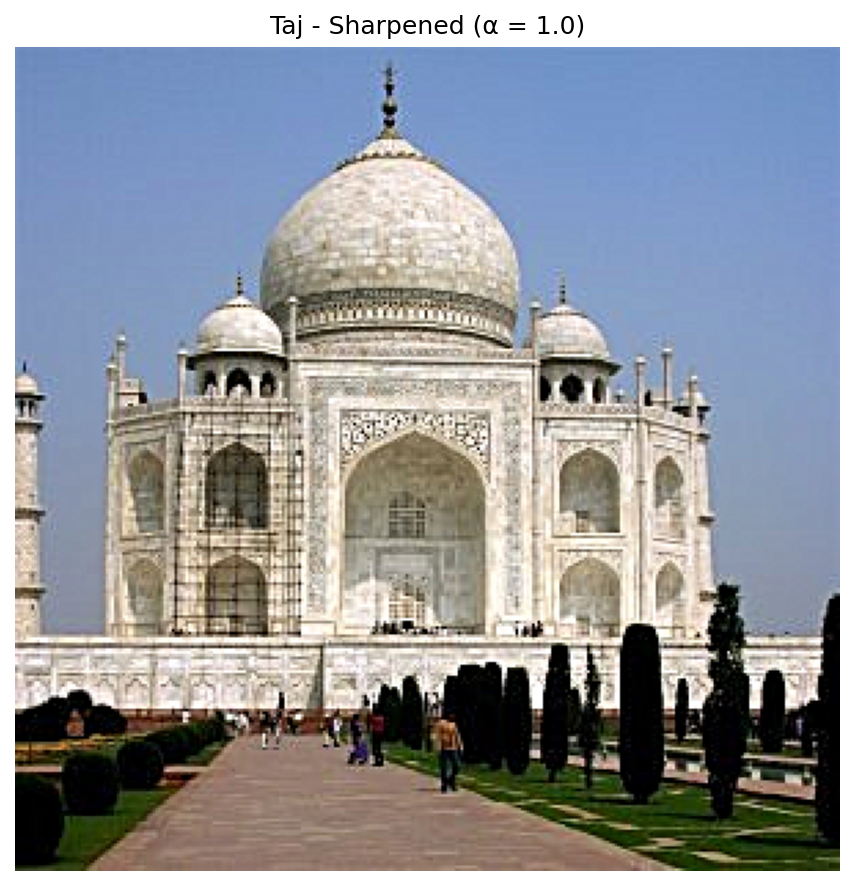
Sharpened (α = 1.0)
Balanced contrastSharpened (α = 2.0)
Pronounced details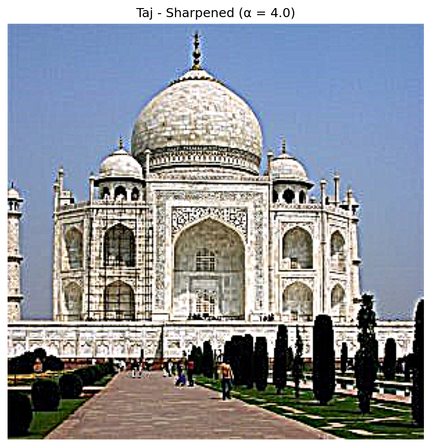
Sharpened (α = 4.0)
Strong contrast / minor halos2. Custom Image: Bird Sharpening Analysis
Sharpening applied to a natural bird photograph. Feather textures and sharp eye contours become significantly more defined as $\alpha$ increases.
Original
Input imageBlurred (σ = 1.5)
Low-pass filter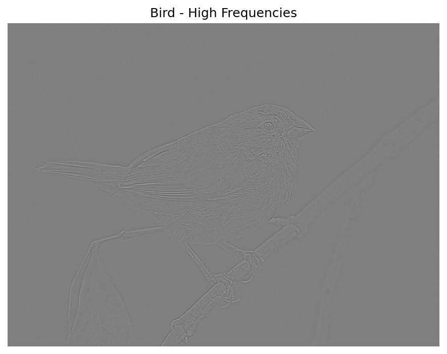
High Frequencies
Detail layerSharpened (α = 0.5)
Slight detail boost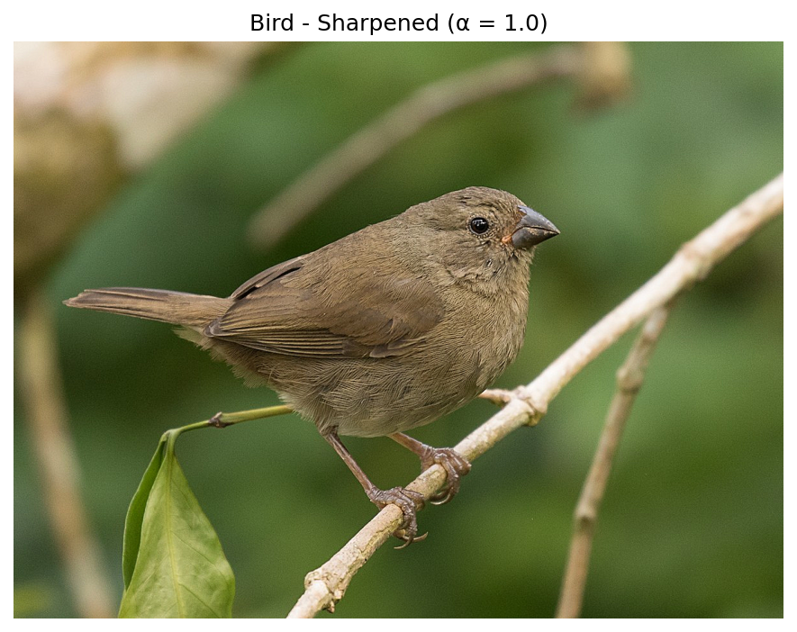
Sharpened (α = 1.0)
Optimal balance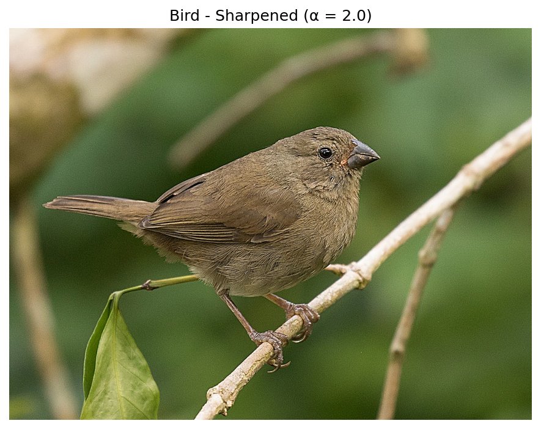
Sharpened (α = 2.0)
Enhanced feather outlineSharpened (α = 4.0)
Over-sharpened artifacting3. Evaluation: Can Sharpening Undo Blur?
To evaluate whether unsharp masking can reverse Gaussian blur, a crisp photo (Food image) was intentionally blurred using $\sigma = 2.0$ and then resharpened at varying $\alpha$ values ($0.5, 1.0, 2.0, 4.0$).
Original Sharp Image
Baseline ground truth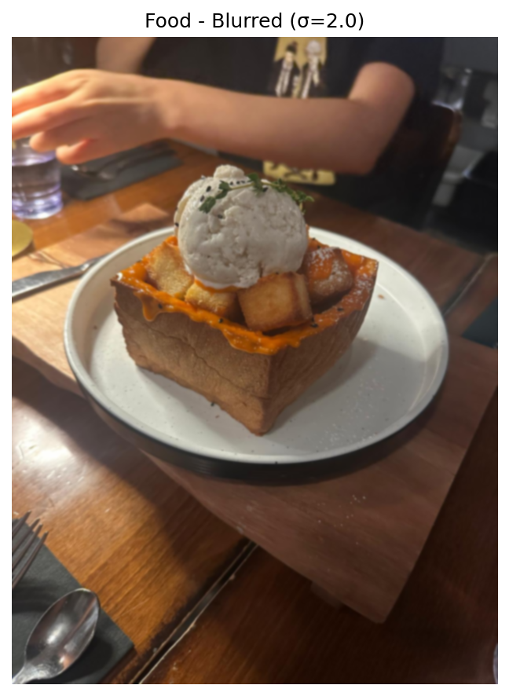
Blurred Image (σ = 2.0)
High frequencies removedResharpened (α = 0.5)
Slight edge recoveryResharpened (α = 1.0)
Moderate recovery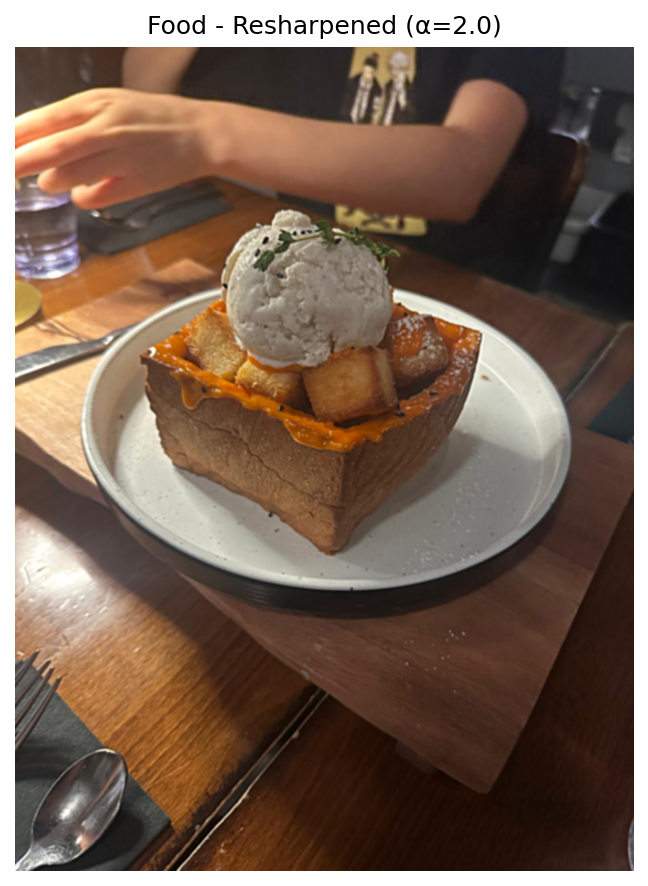
Resharpened (α = 2.0)
Edge contrast boostedResharpened (α = 4.0)
High contrast / overshootConclusion: While resharpening restores local edge contrast and makes boundaries look crisp again, it cannot fully recover fine surface textures destroyed by the initial blur. The low-pass Gaussian convolution permanently attenuates high-frequency signal content, so sharpening merely amplifies whatever remaining high frequencies exist, often creating high-contrast edges without restoring lost texture detail.
Part 2.2: Hybrid Images
Hybrid images combine the low-frequency spatial components of one image with the high-frequency components of another. Because human visual perception processes high frequencies at close distances and low frequencies from farther away, the high-frequency image dominates when viewed up close, while the low-frequency image becomes clearly visible at a distance.
Mathematically, given a low-frequency image $I_{\text{low}}$ filtered with Gaussian parameter $\sigma_{\text{low}}$ and a high-frequency image $I_{\text{high}}$ filtered with $\sigma_{\text{high}}$, the hybrid image is computed as: $$\text{Hybrid} = (I_{\text{low}} * G_{\sigma_{\text{low}}}) + \left( I_{\text{high}} - (I_{\text{high}} * G_{\sigma_{\text{high}}}) \right)$$
Implementation
def create_hybrid_image(im1: np.ndarray, im2: np.ndarray,
sigma_low: float, sigma_high: float) -> np.ndarray:
"""
Creates a hybrid image by blending low frequencies of im1 with
high frequencies of im2.
"""
# 1. Compute low frequencies for Image 1
kernel_low_size = int(2 * np.ceil(3 * sigma_low) + 1)
g_low = create_2d_gaussian(kernel_low_size, sigma_low)
im1_low = scipy.signal.convolve2d(im1, g_low, mode='same', boundary='symm')
# 2. Compute high frequencies for Image 2 (Original - Blurred)
kernel_high_size = int(2 * np.ceil(3 * sigma_high) + 1)
g_high = create_2d_gaussian(kernel_high_size, sigma_high)
im2_blurred = scipy.signal.convolve2d(im2, g_high, mode='same', boundary='symm')
im2_high = im2 - im2_blurred
# 3. Combine low and high frequency channels
hybrid = im1_low + im2_high
return np.clip(hybrid, 0.0, 1.0)
1. Primary Example: Derek + Nutmeg (Full Breakdown & FFT Analysis)
We align the eyes of Derek (low-frequency source) and Nutmeg (high-frequency source). Applying a low-pass Gaussian filter ($\sigma_{\text{low}} = 7$) captures Derek's facial structure, while a high-pass filter ($\sigma_{\text{high}} = 4$) extracts Nutmeg's sharp fur and facial details.

Nutmeg (High-Freq Source)
Aligned Input
Derek (Low-Freq Source)
Aligned InputLow-Pass Result
Gaussian Filter (σ = 7)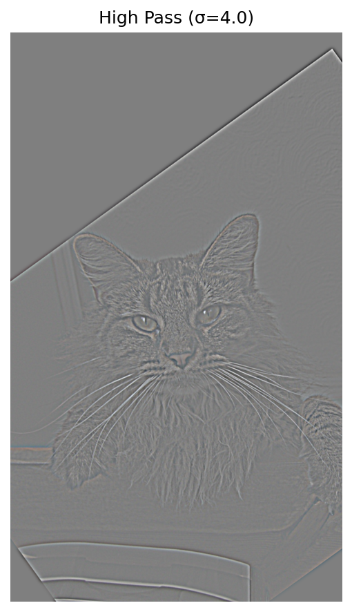
High-Pass Result
Detail Filter (σ = 4)
Final Hybrid Result
Combined Low + High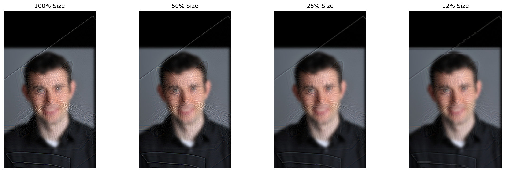
Multi-Scale View
Simulates viewing at increasing distancesFrequency Domain Analysis (FFT Spectrum)
Below are the 2D Fourier Transforms ($\log(1 + |\text{FFT}|)$) illustrating frequency distribution across each stage of processing. The low-pass operation concentrates energy at the central low frequencies, while the high-pass operation suppresses central energy and isolates boundary frequencies.
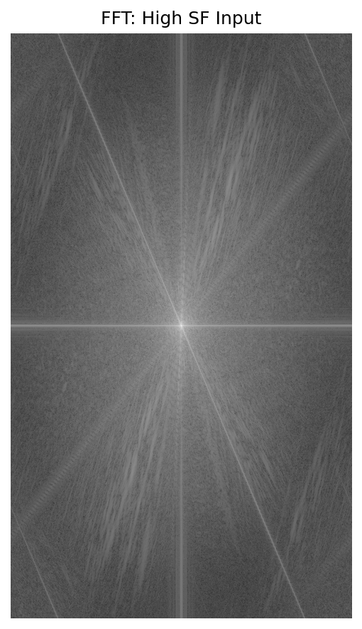
Input High-Freq FFT
Nutmeg spectrum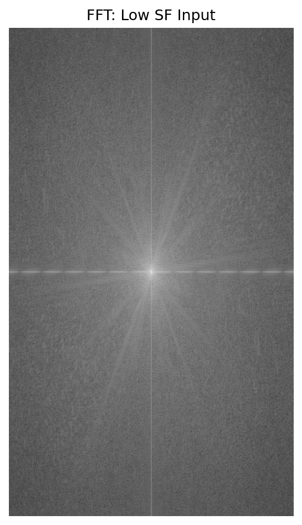
Input Low-Freq FFT
Derek spectrum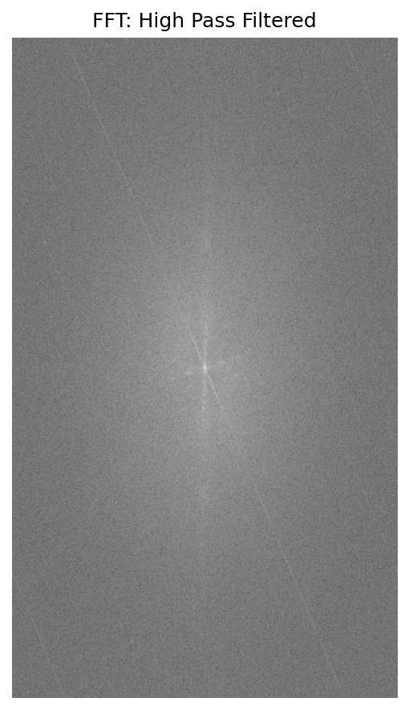
High-Passed FFT
High frequencies isolated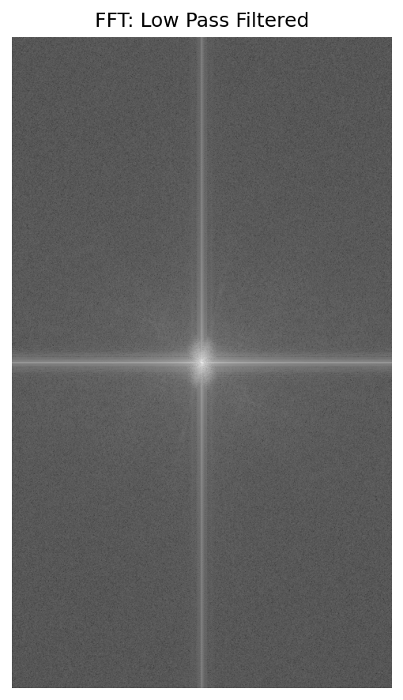
Low-Passed FFT
Low frequencies isolated
Hybrid Spectrum FFT
Merged spectrum2. Facial Expression Blend: Angry + Smiling
Combining fine high-frequency lines of an angry expression with soft low-frequency contours of a smiling face. Up close, the angry expression dominates; as you step back, the smiling expression emerges clearly.
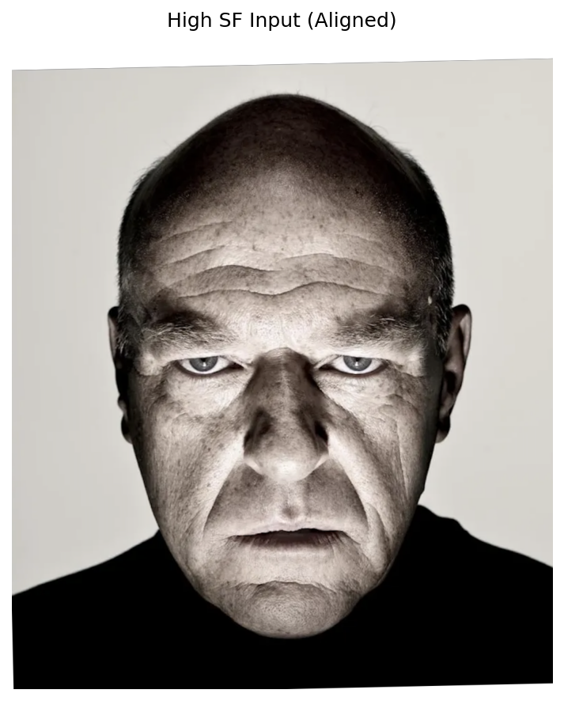
High-Freq Source
Angry Expression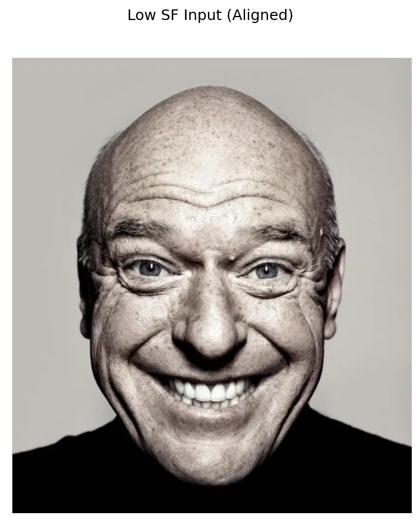
Low-Freq Source
Smiling ExpressionLow-Pass Component
Base shape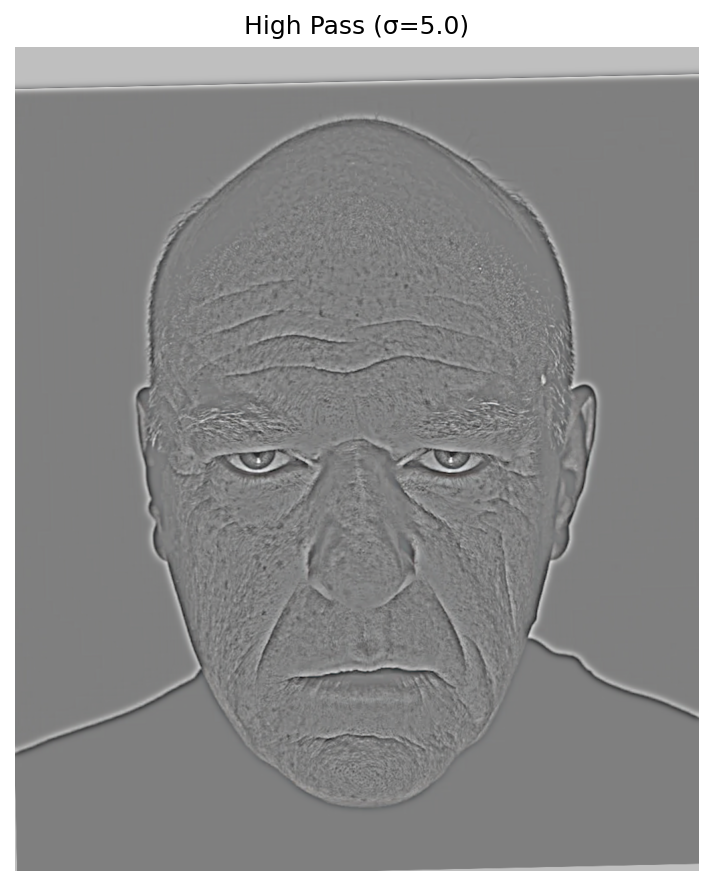
High-Pass Component
Sharp features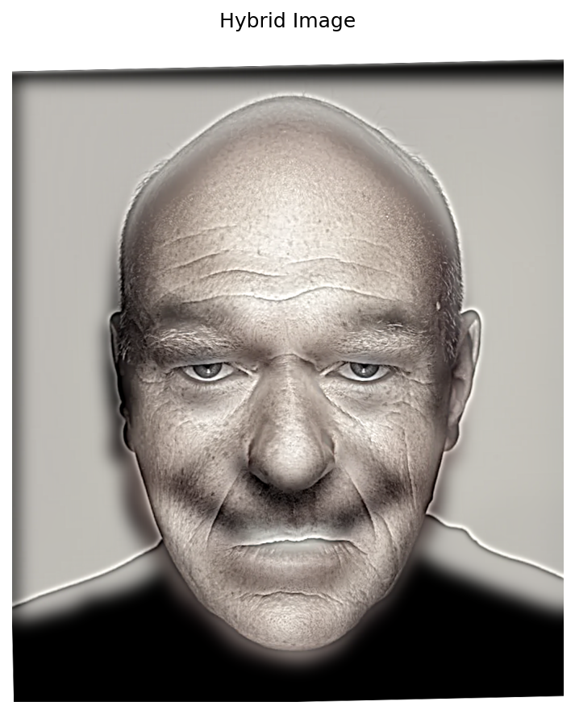
Final Hybrid Result
Angry (close) / Smiling (far)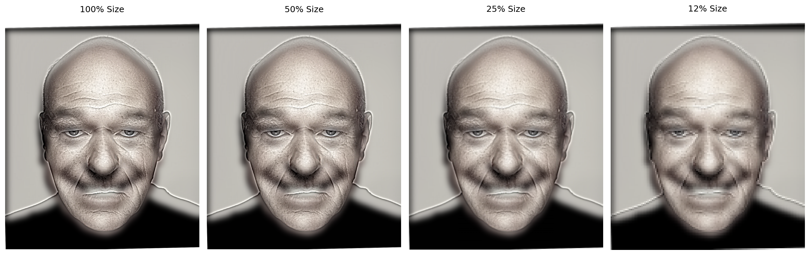
Multi-Scale View
Distance simulation3. Character Hybrid: Harry Potter + Voldemort
Combining high frequencies from Voldemort with low frequencies from Harry Potter. Due to precise eye and nose alignment, Voldemort's sharp facial details dominate close-up, while Harry's distinctive head structure becomes evident at a distance.
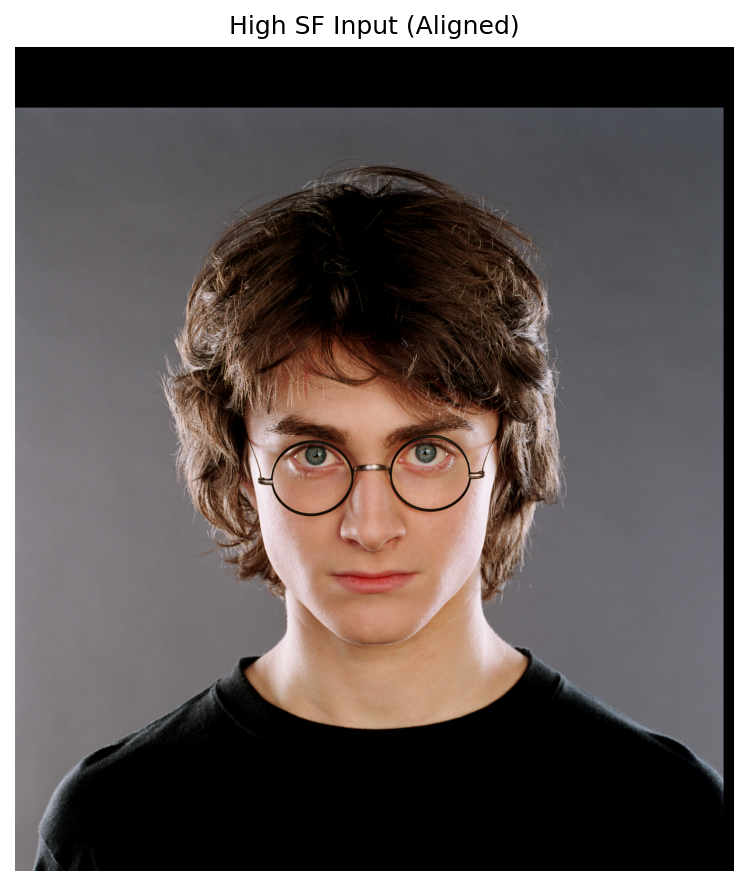
Harry Aligned
High-Freq Source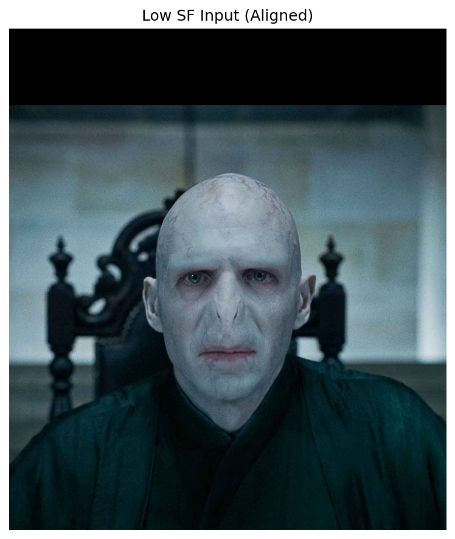
Voldemort Aligned
Low-Freq Source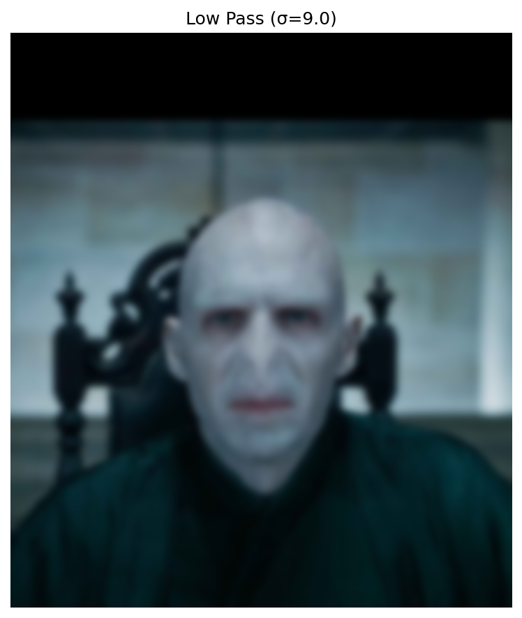
Voldemort Low-Pass
Soft low-pass filter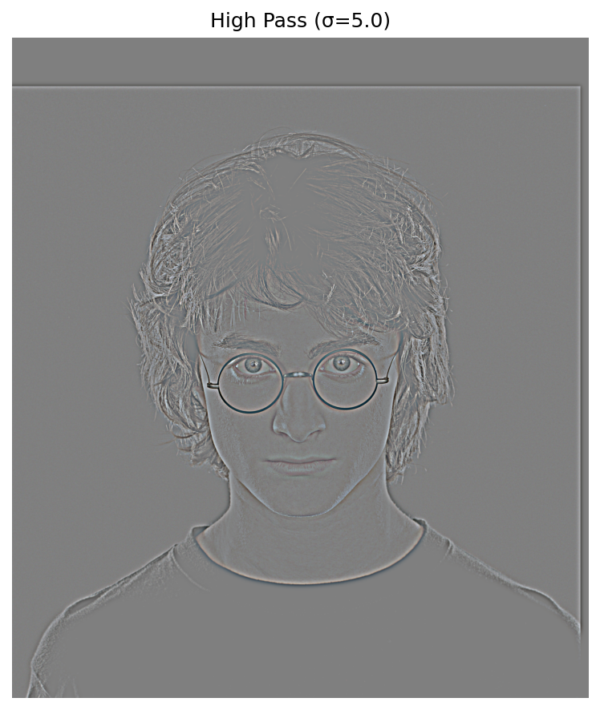
Harry High-Pass
Sharp high-pass filter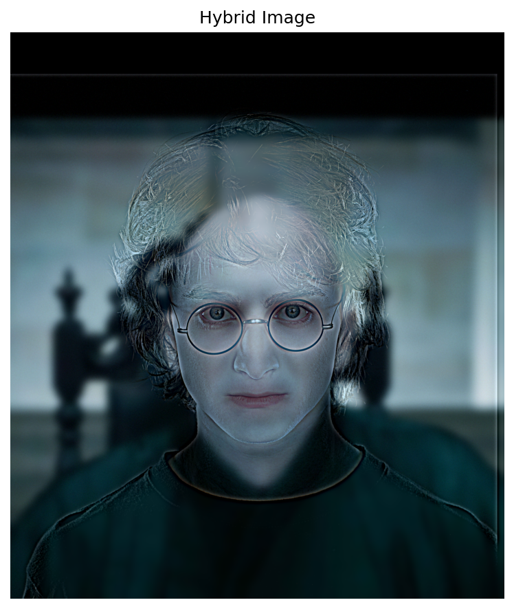
Final Hybrid Result
Voldemort (close) / Harry (far)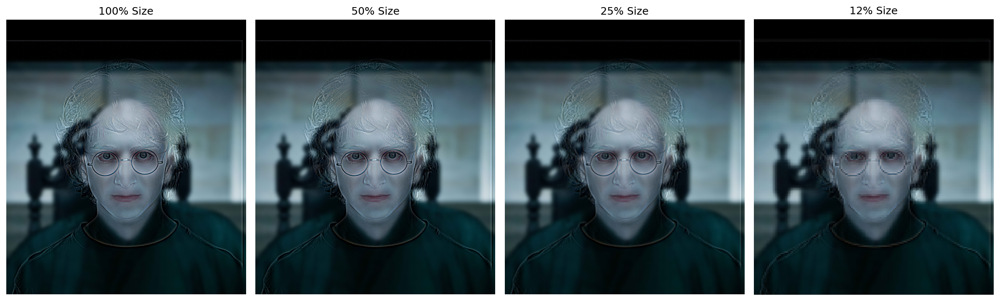
Multi-Scale View
Distance perception sequencePart 2.3: Gaussian and Laplacian Stacks
To isolate image details at different spatial scales, we build Gaussian and Laplacian stacks. Unlike an image pyramid, images in a stack retain their original spatial resolution (no downsampling).
A Gaussian stack $\{G_0, G_1, \dots, G_N\}$ is formed by repeatedly blurring the image with exponentially increasing $\sigma$ values ($G_0 = I$, $G_{k+1} = G_k * G_{\sigma_k}$). The Laplacian stack $\{L_0, L_1, \dots, L_N\}$ isolates specific frequency bands by taking differences between consecutive Gaussian levels: $$L_k = G_k - G_{k+1} \quad \text{for } 0 \le k < N, \quad \text{and } L_N = G_N$$ Because $I = \sum_{k=0}^N L_k$, the original image can be perfectly reconstructed by summing all Laplacian levels and the low-frequency residual $G_N$.
Implementation
def build_gaussian_stack(im: np.ndarray, num_levels: int, initial_sigma: float) -> list:
"""Builds a Gaussian stack without downsampling."""
stack = [im.copy()]
current_im = im.copy()
for i in range(num_levels - 1):
sigma = initial_sigma * (2 ** i)
kernel_size = int(2 * np.ceil(3 * sigma) + 1)
g_kernel = create_2d_gaussian(kernel_size, sigma)
if im.ndim == 2:
current_im = scipy.signal.convolve2d(current_im, g_kernel, mode='same', boundary='symm')
else:
current_im = np.zeros_like(current_im)
for c in range(im.shape[2]):
current_im[:, :, c] = scipy.signal.convolve2d(stack[-1][:, :, c], g_kernel, mode='same', boundary='symm')
stack.append(current_im)
return stack
def build_laplacian_stack(gaussian_stack: list) -> list:
"""Builds a Laplacian stack from a Gaussian stack."""
laplacian_stack = []
num_levels = len(gaussian_stack)
for i in range(num_levels - 1):
laplacian_stack.append(gaussian_stack[i] - gaussian_stack[i+1])
laplacian_stack.append(gaussian_stack[-1].copy()) # Residual level
return laplacian_stack
1. Apple & Orange Stacks
Below are the 5-level Gaussian and Laplacian stacks for the classic Apple and Orange inputs. The Laplacian stacks isolate high-frequency surface textures at Level 0 down to smooth, broad lighting transitions at Level 4.

Apple Input
Original image
Orange Input
Original image
Apple Gaussian Stack
Levels 0–4 blurring progression
Apple Laplacian Stack
High to low frequency bands
Orange Gaussian Stack
Levels 0–4 blurring progression
Orange Laplacian Stack
High to low frequency bandsPart 2.4: Multiresolution Blending
Multiresolution blending (Burt and Adelson) seamlessly combines two images $A$ and $B$ across multiple spatial frequency bands using a soft mask $M$. By constructing a Gaussian stack for the mask $M_k$ and Laplacian stacks for both images ($L_k(A)$ and $L_k(B)$), each frequency band is blended independently: $$B_k = M_k \cdot L_k(A) + (1 - M_k) \cdot L_k(B)$$ Summing all blended levels $\sum B_k$ yields a composite image where sharp details transition over a narrow boundary while smooth lighting and color variations transition over a wide, seamless seam.
Implementation
def multiresolution_blend(im1: np.ndarray, im2: np.ndarray, mask: np.ndarray, num_levels: int = 5, sigma: float = 2.0) -> np.ndarray:
"""Blends two images using Laplacian stacks and a smoothed mask Gaussian stack."""
g_stack1 = build_gaussian_stack(im1, num_levels, sigma)
g_stack2 = build_gaussian_stack(im2, num_levels, sigma)
mask_stack = build_gaussian_stack(mask, num_levels, sigma)
l_stack1 = build_laplacian_stack(g_stack1)
l_stack2 = build_laplacian_stack(g_stack2)
blended_stack = []
for k in range(num_levels):
m_k = mask_stack[k]
if im1.ndim == 3 and m_k.ndim == 2:
m_k = np.repeat(m_k[:, :, np.newaxis], 3, axis=2)
b_k = m_k * l_stack1[k] + (1.0 - m_k) * l_stack2[k]
blended_stack.append(b_k)
final_blend = np.sum(blended_stack, axis=0)
return np.clip(final_blend, 0.0, 1.0)
1. The Classic Oraple
Using a vertical step mask, we blend the Apple and Orange images. Unlike a direct cut, multiresolution blending avoids harsh seam artifacts by smoothly transitioning low-frequency skin tones while keeping fine surface textures crisp.
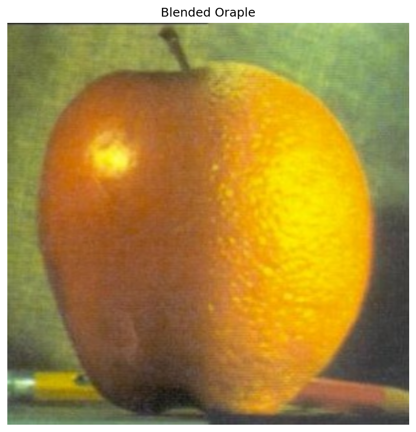
Oraple Final Blend
Seamless 5-level blend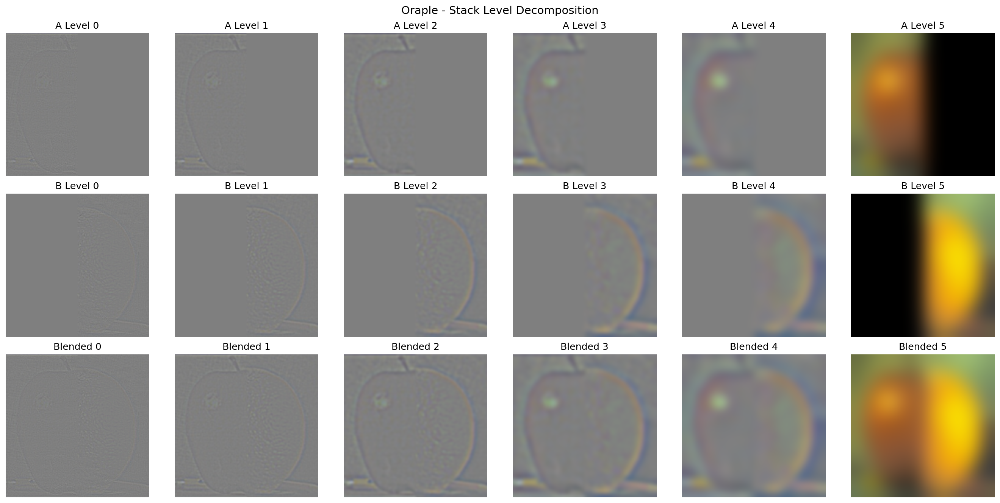
Oraple Level Breakdown
Masked contributions at levels 0, 2, and 4 (Fig. 3.42)2. Custom Blend 1: Moon Cheese
Blending the surface of a full moon with texture from a cheese wheel using an irregular circular mask.

Moon Input
Primary image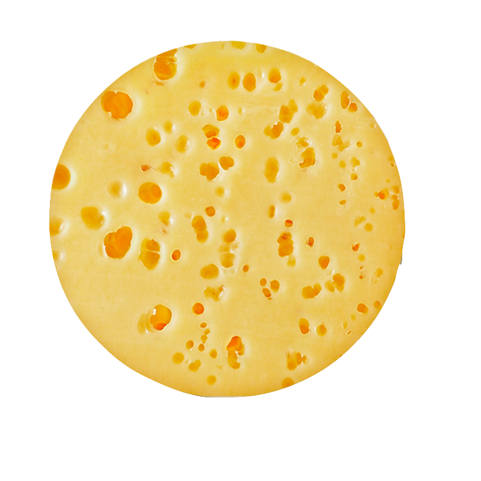
Cheese Input
Secondary image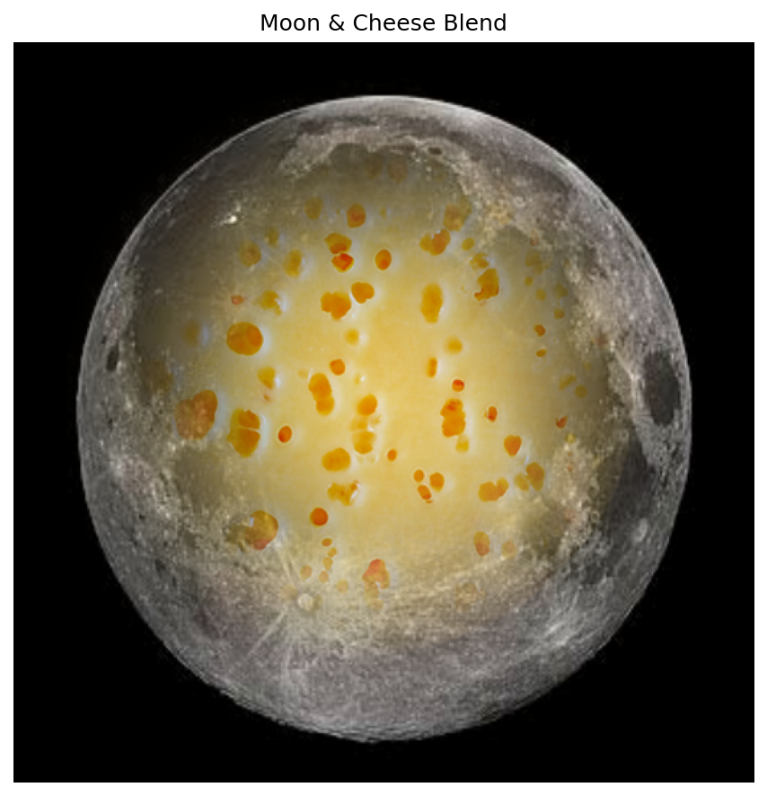
Moon Cheese Final Blend
Multiresolution result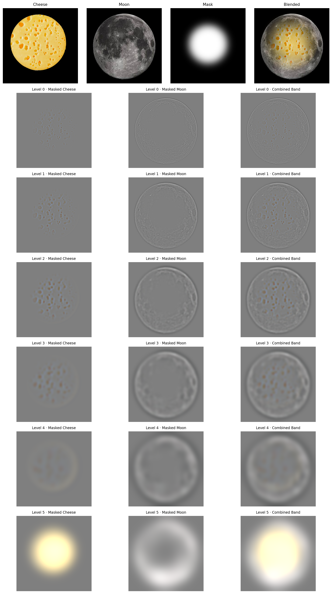
Blending Decomposition
Stack level contributions3. Custom Blend 2: Aurora Polar Night
Blending a vivid northern lights landscape with a polar night scene using a custom horizon mask.
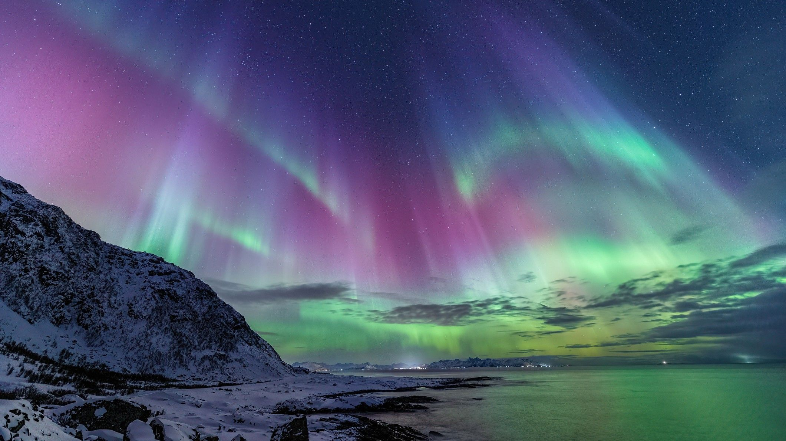
Aurora Input
Sky component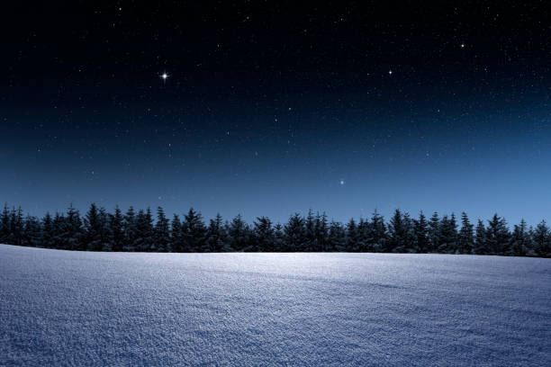
Polar Night Input
Landscape component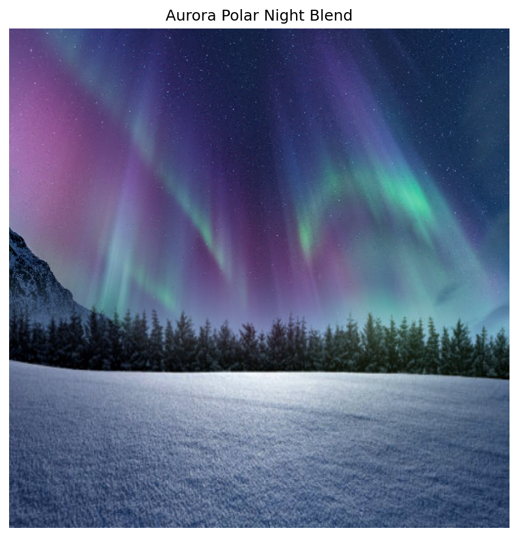
Aurora Polar Night Final Blend
Multiresolution compositeConclusion & Key Takeaways
The most important insight I gained from this project is that almost all frequency-based image processing comes down to a single fundamental operation: blurring and subtracting. While image sharpening, hybrid images, and multiresolution blending appear distinct on the surface, seeing them through the lens of frequency decomposition reveals that they are all variations of the exact same principle. Sharpening adds back the high frequencies that blurring removes; hybrids combine the high frequencies isolated from one image with the low frequencies retained by another; and Laplacian stacks repeatedly apply this blur-and-subtract pipeline across multiple scales.
Beyond conceptualizing this unified framework, working directly with frequency bands transformed how I reason about parameters and visual perception. Instead of guessing $\sigma$ values, understanding that a Gaussian cutoff scales inversely with $\sigma$ ($\approx 0.19/\sigma$ cycles per pixel) allowed me to select parameters intentionally based on an image's structural content—such as realizing high-detail textures like fur or whiskers must serve as the high-frequency source because low-pass filtering strips them away completely.
I was also struck by practical nuances in the implementation: how convolution's associative property makes blurring and taking derivatives mathematically identical to a single Difference of Gaussians (DoG) filter (yielding identical results to machine precision $10^{-15}$), how critical boundary padding and alignment are to preventing edge artifacts, and how mask Gaussian stacks are essential for hiding seams in blending. Furthermore, I observed that color predominantly resides in low frequencies; color in high-frequency channels has a minimal visual impact, whereas in blending, color alignment between sources dictates whether the composition looks natural or mismatched.
Ultimately, isolating these spatial frequencies firsthand bridged the gap between lecture theory and hands-on practice, proving that complex visual effects rely on the precise mathematical manipulation of underlying image signals.